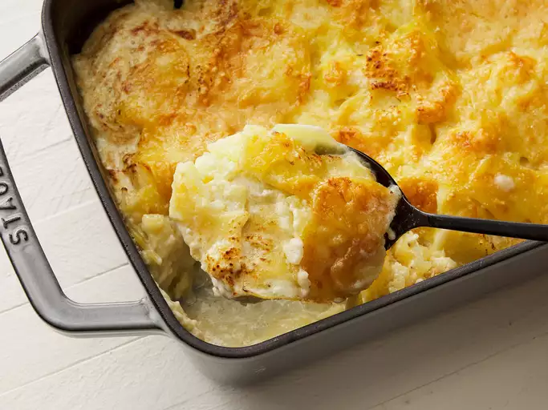

Potatoes au Gratin

A classic French dish that combines thinly sliced potatoes with a rich, creamy sauce and melted cheese. The potatoes are layered in a baking dish, often with garlic, butter, and herbs, then topped with cheese like Gruyère, Cheddar, or Parmesan. The dish is baked until the potatoes are tender and the top is golden and bubbly, creating a luxurious and indulgent side dish.
Ingredients
- 3 pounds Yukon Gold potatoes, peeled and very thinly sliced
- 3 cloves garlic, minced
- ¾ teaspoon salt
- 1 cup heavy cream, divided
- freshly ground black pepper to taste
- freshly grated nutmeg to taste
- 2 cups freshly shredded Gruyere cheese, divided
Steps
- Preheat the oven to 350 degrees F (175 degrees C).
- Place potatoes, garlic, and salt into a large pot; fill with enough water to cover. Bring to a boil; reduce heat to medium and simmer potatoes until tender but not mushy, 8 to 10 minutes. Use a slotted spoon to transfer about half the potatoes into a 9x13-inch baking dish.
- Pour 1/2 of the cream over the potatoes and season with black pepper and nutmeg; sprinkle 1/2 of the Gruyère cheese on top. Layer the remaining potatoes on top and season with black pepper and nutmeg. Pour over remaining cream and sprinkle with remaining Gruyère cheese.
- Bake in the preheated oven until cheese is golden brown on top, about 1 hour.
Home